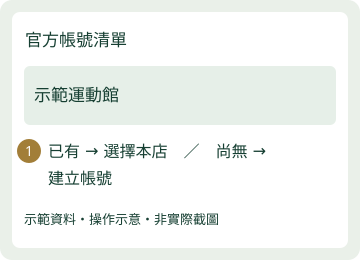
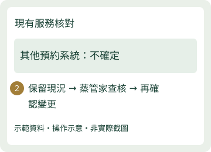
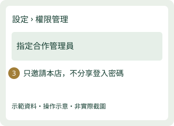
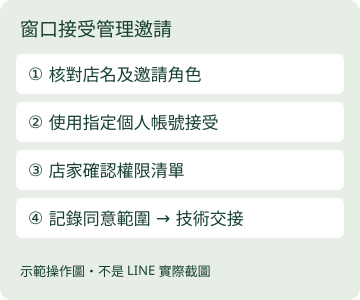
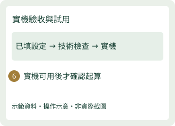

本版供對接窗口與技術端交接。與店家版相同六步；不新增管理系統。下方勾選只供當頁參考，重新整理不保留，正式紀錄請放原有工作文件。
每店邀請前核對：指定蒸管家受邀工作帳號。
OA 邀請由窗口指定的個人／工作登入帳號接受；官方 LINE 只是聯絡窗口。Developers 登錄信箱另從 Console 核對，不假設相同，也不以 HQ 權限繞過店家授權。
窗口版 · 步驟 1
核對已提供資料

店家：核對或更正既有資料
窗口：帶入已知資料、查重，不向店家重複索取
技術端：僅在授權環境核對店家與帳號關係
完成條件：店名、店長信箱、官方 LINE 連結已核對；不是僅憑同名授權
窗口版 · 步驟 2
登入並確認本店官方 LINE

店家：使用自己的帳號登入
窗口：確認店家是持有者或有管理授權；不使用窗口 HQ 權限代替
技術端：只讀核對本店 OA，不讀取不必要的憑證
完成條件：本店名稱與 @ID 一致；尚無帳號則由店家保有所有權
窗口版 · 步驟 3
確認是否已有串接

店家：回覆已有／沒有／不確定
窗口：記錄其他系統及管理者，不推論沒有串接
技術端：查核 Webhook、Login、LIFF、OA 回應設定及既有用途
完成條件：既有串接用途有結論；無法確認則標記待查，不覆蓋
窗口版 · 步驟 4
邀請必要管理權限

店家：邀請指定帳號或協同操作
窗口：先確認工作帳號；記錄店家同意範圍、角色及接受狀態
技術端：只使用受邀的必要權限，OA 與 Developers 分別核對
完成條件：OA 本店管理員按需；LIFF 編輯需指定 Login channel Admin；Provider Admin 僅必要建立作業另核准
窗口版 · 步驟 5
確認變更，交由蒸管家接手

店家：核准具體設定與不可逆項目
窗口：彙整設定變更清單；外發與資源分開核准
技術端：依既有架構設定，保留舊值與回復方式，保護憑證
完成條件：設定已填與技術檢查分開；缺漏不偷偷借中央或他店通道
窗口版 · 步驟 6
實機驗收，再開始試用

店家：使用自己的手機完成驗收
窗口：收集實機結果、異常時間；確認交付及試用起算
技術端：核對本人／角色／店別、交易、通知及返回；防止重複啟用
完成條件：實機通過且交付可用才起算；未通過保持未起算
異常處理
- 登入失敗：由店家恢復帳號或找原管理者，不索取密碼／驗證碼。
- 邀請過期或帳號不符：店家核對指定接收人後重新邀請，不公開邀請連結。
- 看不到 Developers channel：檢查 channel 角色，OA 管理員不是等同權限；不要擴大授權整個 Provider 作為捷徑。
- 已有其他 Webhook 或不明串接：停該項變更，窗口取得原用途及共存方案；其他準備繼續。
- 需選 Provider：先確認所有權及不可逆影響，不預設每店新建。
- 畫面正常但登入／回店錯誤：保留未通過狀態，技術端查店別、channel、身分與連結，不只換標題。
- 通知：設定成功不代表訊息通過；外發先核准，送達、Flex、按鈕與事件去重分別記錄。